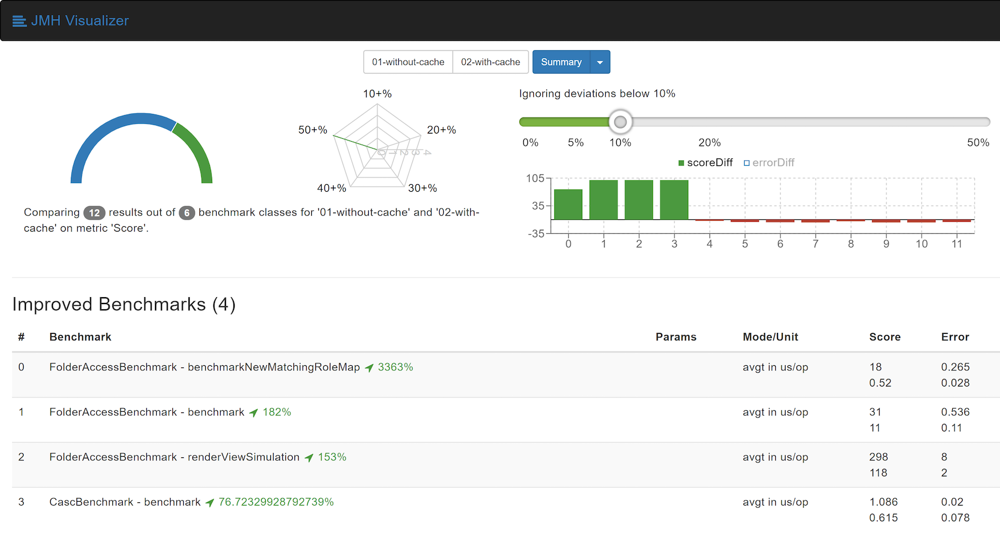

Jenkins 插件的微基准测试框架
Jenkins 插件的微基准测试框架
作为我 Google 编程夏令营的一部分，我一直致力于改进角色策略插件（Role Strategy Plugin）的性能。 由于没有现有的方法来度量性能以及在 Jenkins 插件上做基准测试， 我在项目第一阶段的工作是创建一个框架在一个 Jenkins 实例中运行 Jenkins 插件中的基准测试。 为了让我们的工作更容易些，我们选择了 Java微基准测试工具来运行这些基准。 这使我们能够可靠地度量对时间要求严格的功能的性能，将有助于让 Jenkins 为每个人更快的运转。
最近在 Jenkins 单元测试工具2.50中发布了微基准测试框架。 下面的博客文章展示了如何在插件中运行基准测试。
介绍
该框架通过为 JMH 基准的每个 fork 启动一个临时的 Jenkins 实例来运行，
就像 Jenkins 测试工具中的 JenkinsRule。
基准测试是直接从 JUnit 测试运行的，它允许在运行过程中失败构建，并且很容易从 IDE 中运行基准测试，就像单元测试一样。
你可以很容易地通过使用 Java 方法或使用 Jenkins plugin:configuration-as-code:[配置即代码插件]来配置基准并将路径传递到 YAML 文件。
要从您的插件运行基准测试，您需要做以下工作：
- 将所需的最低 Jenkins 版本升级到2.60.3或更高版本
- 将 Plugin-POM 升级到 ≥ 3.46 的版本或手动更新 Jenkins 测试工具到 ≥ 2.51 的版本
现在，要运行基准测试，您需要有一个包含 @Test 的基准测试运行程序，以便它可以像 JUnit 测试一样运行。
从测试方法内部，可以使用 JMH 提供的 OptionsBuilder 来配置基准。
例如：
public class BenchmarkRunner {
@Test
public void runJmhBenchmarks() throws Exception {
ChainedOptionsBuilder options = new OptionsBuilder()
.mode(Mode.AverageTime)
.forks(2)
.result("jmh-report.json");
// Automatically detect benchmark classes annotated with @JmhBenchmark
new BenchmarkFinder(getClass()).findBenchmarks(options);
new Runner(options.build()).run();
}
}
示例基准
现在，你可以编写第一个基准：
无需任何特别的设置
@JmhBenchmark
public class JmhStateBenchmark {
public static class MyState extends JmhBenchmarkState {
}
@Benchmark
public void benchmark(MyState state) {
// benchmark code goes here
state.getJenkins().setSystemMessage("Hello world");
}
}
使用配置即代码
要使用配置即代码，除了上面的依赖外，还需要在你的 pom.xml 添加如下内容：
<dependency>
<groupId>io.jenkins</groupId>
<artifactId>configuration-as-code</artifactId>
<version>1.21</version>
<optional>true</optional>
</dependency>
<dependency>
<groupId>io.jenkins</groupId>
<artifactId>configuration-as-code</artifactId>
<version>1.21</version>
<classifier>tests</classifier>
<scope>test</scope>
</dependency>
现在配置一个基准很简单，只需提供 YAML 文件的路径并指定包含基准状态的类。
@JmhBenchmark
public class SampleBenchmark {
public static class MyState extends CascJmhBenchmarkState {
@Nonnull
@Override
protected String getResourcePath() {
return "config.yml";
}
@Nonnull
@Override
protected Class<?> getEnclosingClass() {
return SampleBenchmark.class;
}
}
@Benchmark
public void benchmark(MyState state) {
Jenkins jenkins = state.getJenkins(); // jenkins is configured and ready to be benchmarked.
// your benchmark code goes here...
}
}
更多示例
作为这个项目的一部分，在角色策略插件（Role Strategy Plugin）中创建了一些基准测试，它们展示了为各种情况配置实例。 你可以在这里找到它们。
运行基准测试
从 Maven 运行基准测试
为了方便从 Maven 运行基准测试，创建了一个 Maven 配置文件来运行基准测试，并且可以从 Plugin-POM 3.45 版本开始使用。
然后你可以使用 mvn test -Dbenchmark 从命令行运行基准测试。
在 ci.jenkins.io 运行基准测试
如果您的插件托管在 ci.jenkins.io 上，那么可以直接从 Jenkinsfile 轻松地运行基准测试。
通过在 Jenkinsfile 中的 buildPlugin() 步骤后使用 runBenchmarks() 方法，该步骤现在在
Jenkins 流水线库。
此函数还接受生成的 JMH 基准报告的路径作为可选的参数并存档基准结果。
在 pull request 构建中运行基准测试允许您不断地进行测试监视给定更改的性能影响。
例如，来自角色策略插件（Role Strategy Plugin）的 Jenkinsfile ：
buildPlugin()
runBenchmarks('jmh-report.json')
可视化基准测试结果
可以使用 plugin:jmh-report[JMH 报告插件]或将基准测试报告传递给 JMH 可视化工具 web 服务来可视化生成的基准报告（JSON格式）。 举个例子，这里有一些来自角色策略插件（Role Strategy Plugin）中基准测试的可视化报告:

上面所看到的这些改进是通过对插件的一个小的 pull request 获得的，并展示了即使是看起来很小的更改也可以带来很大的性能改进。 微基准测试有助于找到这些热点，并估计更改的影响。
一些提示与技巧
- 由于上面示例中的
BenchmarkRunner类名不符合 Maven Surefire 插件的测试条件命名约定，基准测试不会干扰 JUnit 测试。 - 基准测试方法需要用
@Benchmark进行注解，以便 JMH 检测它们。 - 当注解为
@JmhBenchmark时，包含基准的类由BenchmarkFinder自动找到。 - 对 Jenkins 实例的引用可以通过
JmhBenchmarkState#getJenkins()或通过Jenkins.getInstance()获得，就像您在其他情况下会做的那样。 JmhBenchmarkState提供了setup()和tearDown()方法，根据您的基准测试的需求，可以重写这些方法来配置 Jenkins 实例。- 由于
highmem节点的可用性有限，基于 ci.jenkins.io 的基准测试目前被限流。 - 基准框架在 Jenkins 测试工具2.50中提供，建议使用2.51版本，因为它包含一些错误修复。
链接及反馈
如果您有任何反馈、评论或问题， 请通过角色策略插件（Role Strategy Plugin） Gitter 聊天室 或通过 Jenkins 开发者邮件列表随时与我联系。